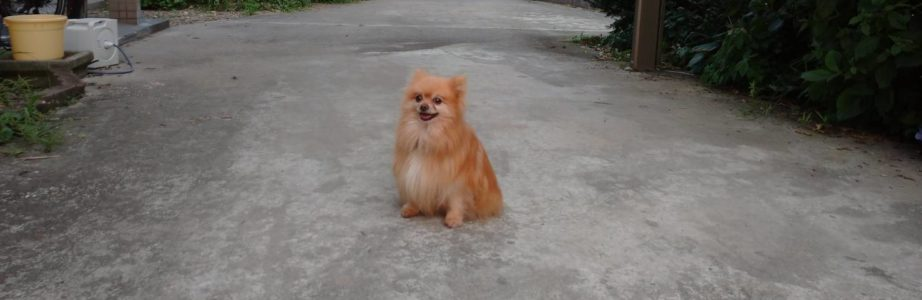

渡辺アニマルクリニックは予約制となっております。往診も行っています。
診療時間： 9:00 ～ 18:00
※時間外の受付も可能です。お気軽にご相談ください
休診日： 土曜午後・日曜・祝日
※不定休:休診日は当院のカレンダーでご確認下さい
TEL. 080-2806-6796

▼ 獣医師紹介
獣医師ごあいさつ

- 院長：渡辺大作
- 長年、大動物の病気治療と研究に従事していました。
- 北里大学を定年退職後、農業に専念する予定でしたが、愛犬・愛猫の病気をきっかけにペットの病気予防と終末期医療の重要性を身にしみて感じ、動物病院を開業することを決めました。
- 飼い主さまの身近な獣医師として、大切な愛犬、愛猫の予防と治療に役立つ病院を目指します。
- 経歴
- 1979年 ~ 2005年 山形県農業共済組合連合会
- 2005年 ~ 2007年 北里大学獣医学部 助教授
- 2007年 ~ 2013年 北里大学獣医学部 准教授
- 2013年 ~ 2020年 北里大学獣医学部 教授
- 学歴・学位
- 1977年 獣医師免許
- 1979年 岩手大学大学院 農学研究科 農学修士
- 1993年 北里大学大学院 博士(獣医学)
- 趣味
- 読書
- 農業・ガーデニング
- 旅行